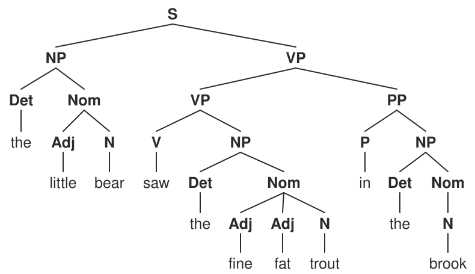
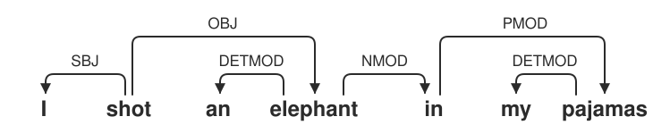
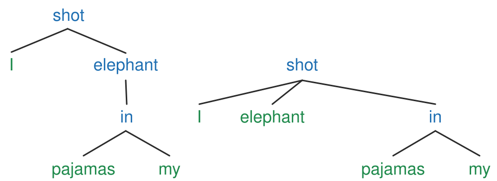

NLP#
NLP tasks and benchmarks, tokenization, word embeddings, language models, and grammars and parsing.
About this chapter
The first half is a reference: the standard NLP tasks, the benchmarks used to measure them (GLUE, SuperGLUE, NLI and QA datasets, a table of text classification datasets), and the metrics, mainly cross-entropy and perplexity. The second half goes through the pieces of a pipeline in order: tokenization turns text into tokens, embeddings turn tokens into vectors, and language models assign probabilities to token sequences.
The grammar section is older, from the NLTK book: context-free grammars, phrase-structure and dependency trees, and the parsing algorithms that build them. The chapter ends with definitions from linguistics (semantics, syntax, pragmatics). Transformers and LLMs have their own notes in the research overviews.
See also notes in 📌 transformers.
Benchmarks#
Tasks#
Roughly in pipeline order: the first few tasks turn raw text into units and labels (tokens, embeddings, parts of speech, entities, parse trees), and the rest are end tasks built on top of them.
Nice repo keeping track of progress here.
tokenization - convert raw text into tokens that can be fed to a model
token/word embeddings - convert tokens to semantic vectors
pos tagging - give each word its part-speech
named entity recognition - classify tokens based on some known annotations (e.g. person, organization)
nested entity recognition - more complex than individual tokens (e.g. “Mary = “Jacob’s brother”)
parse tree extraction - extract out tree of how words operate in a grammar
sentiment classification
text summarization
language modeling (i.e. text generation)
(machine) translation
coreference resolution - correspond simple entities (e.g. “she = Mary”, different names for a protein)
question answering
natural language inference - determining whether a “hypothesis” is true (entailment), false (contradiction), or undetermined (neutral) given a “premise”
topic modeling - unsupervised learning over documents
Datasets#
Benchmarks grouped by style: open-ended collections of many tasks, the widely used GLUE and SuperGLUE suites, inference (NLI) and question-answering sets, and the classification datasets in the table.
open-ended
MMLU: Measuring Massive Multitask Language Understanding (hendrycks, …, song, steinhardt, 2021) - 57 tasks such as elementary math, clinical knowledge, global facts
NLI: allenai natural language instructions (v1: mishra et al. 2022; v2: wang et al. 2022) - 1600+ diverse NLP tasks
Definition which describes the task
For each example: (input text, output (varies), explanation*) - explanation only for some tasks
Big-bench (2022) - crowdsourced diverse (but random) NLP tasks
No task definitions or explanations: the “definition” is instead concatenated to each example’s input
Unveiling Transformers with LEGO: a synthetic reasoning task (zhang, …, bubeck, …, wagner, 2022) - synthetic reasoning task
Large Language Models Still Can’t Plan (A Benchmark for LLMs on Planning and Reasoning about Change) (valmeekam et al. 2022)
very popular
SuperGLUE Benchmark (2019)
8 NLU tasks (keeps two hardest from GLUE, marked with ***) extending to coreference resolution and question-answering
BoolQ (Boolean Questions) - answer a yes/no question about a text passage.
CB (CommitmentBank) - given a text and a clause, predict how much the text commits to the clause
COPA (Choice of Plausible Alternatives) - given a premise sentence and two possible choices, the system must determine either the cause or effect of the premise from two possible choices
MultiRC (Multi-sentence Reading Comprehension) - given a context paragraph, a question about that paragraph, and a list of possible answers, the system must predict which answers are true and which are false
ReCoRD (Reading Comprehension with Commonsense Reasoning Dataset) - multiple-choice QA task (news article + Cloze-style multiple-choice question)
\(^\dagger\)RTE (Recognizing Textual Entailment) - determine if a sentence entails a given hypothesis or not.
WiC (Word-in-Context) - word sense disambiguation task cast as binary classification of sentence pairs. Given two text snippets and a polysemous word that appears in both sentences, the task is to determine whether the word is used with the same sense in both sentences
\(^\dagger\)WSC (Winograd Schema Challenge) - coreference resolution task in which examples consist of a sentence with a pronoun and a list of noun phrases from the sentence. The system must determine the correct referent of the pronoun from among the provided choices.
GLUE Benchmark (2019) = General language understanding evaluation
9 NLU tasks including question answering, sentiment analysis, text similarity and textual entailment
single-sentence tasks
similarity + paraphrase tasks
MRPC (Microsoft Research Paraphrase Corpus) - determine if two sentences are paraphrases from one another.
QQP (Quora Question Pairs)- determine if two questions are semantically equivalent or not.
STS-B (Semantic Textual Similarity Benchmark) - determine the similarity of two sentences with a score from one to five.
Inference Tasks
MNLI (Multi-Genre Natural Language Inference) - determine if a sentence entails, contradicts, or is unrelated to another sentence
QNLI (Question-answering Natural Language Inference) - determine if the answer to a question is contained in a second sentence or not
RTE (Recognizing Textual Entailment) - determine if a sentence entails a given hypothesis or not
WNLI (Winograd Natural Language Inference) - determine if a sentence with an anonymous pronoun and a sentence with this pronoun replaced are entailed or not
more NLI ( natural language inference)
ANLI: Adversarial NLI (nie et al. 2019) - harder examples found by model failures
SNLI Benchmark (bowman et al. 2015) = Stanford Natural Languge Inference - entailment dataset
570k human-annotated sentence pairs where people ask about entailment
FEVER: Fact Extraction and VERification (thorne et al., 2018)
SciTail (khot et al. 2018) - textual entailment derived from science-question answering
QA
SQuAD 2.0 (rajpurkar…liang, 2018) - adds 50k unanswerable questions; system must know when it can’t answer
SQuAD (rajpurkar…liang, 2016) - Stanford Question Answering Dataset (SQuAD) - 100k questions from 23k passages in 500 wikipedia articles
Text classification datasets (used in Tree-Prompt and Aug-imodels)
Dataset
Classes
Text
Label
SST2
Movie review sentiment
2
that loves its characters and communicates something rather beautiful about human nature
positive
SUBJ
subjective vs objective
2
the script isn’t very good; not even someone as gifted as hoffman ( the actor ) can make it work.
subjective
MPQA
question answer sentiment
2
victory of democracy
positive
AGNews
classify news titles
4
Wall St. Bears Claw Back Into the Black (Reuters). “Reuters - Short-sellers, Wall Street’s dwindling band of ultra-cynics, are seeing green again.”
business
CB
given a text and a clause, predict how much the text commits to the clause
3
Premise: “Do you mind if I use your phone?” Ronni could see that Guido’s brain was whirring. Hypothesis: Guido’s brain was whirring
entailment
CR
customer review sentiment
2
i didn ‘t have any major problems installing this software .
positive
DBPedia
Categories in wikipedia
14
Geoffrey D. Falksen (born July 31 1982) is an American steampunk writer.
artist
MR
Movie review sentiment
2
the film is flat .
negative
RTE
Entailment
2
Sentence 1: No Weapons of Mass Destruction Found in Iraq Yet. Sentence 2: “Weapons of Mass Destruction Found in Iraq.
not_entailment
TREC
Classifying questions
6
What ‘s known as The queen of Drinks ?
entity
FPB
Financial phrase sentiment
3
According to Gran, the company has no plans to move all production to Russia, although that is where the company is growing.
neutral
IMDB
Movie review sentiment
2
would put this at the top of my list of films in the category of unwatchable trash! […]
negative
Emotion
Tweet emotion classification
6
i can go from feeling so hopeless to so damned hopeful just from being around someone who cares and is awake
sadness
common data sources
WSJ
then twitter
then Wikipedia
Eval/training metrics#
A language model is trained to minimize the average negative log probability of each next token. Perplexity is the exponent of that loss, so lower is better. It depends on the vocabulary, so it only compares models that share one.
loss: cross-entropy (with binary labels) ends up just the likelihood of the data:
\(-\frac{1}{T} \sum_{t=1}^T \log p_\theta\left(x_t \mid x_{<t}\right)\)
perplexity (PP) - exponent of the loss
\(\begin{array}{r}\operatorname{PPL}=\exp \left(-\frac{1}{T} \sum_{t=1}^T \log p_\theta\left(x_t \mid x_{<t}\right)\right) \\ =\left(\prod_{t=1}^T p_\theta\left(x_t \mid x_{<t}\right)\right)^{-1 / T}\end{array}\)
should only be compared across models w/ same vocab
BLEU
bert-score: https://github.com/Tiiiger/bert_score
Individual tasks#
Tokenization#
Word vocabularies are too big and characters make sequences too long, so most models use subwords. Byte-pair encoding (BPE) builds the subword vocabulary from data by merging frequent pairs.
Tokenizers - Hugging Face Course
nice blog post pointing out that things can’t really be “tokenizer-free” (arnet, 2025)
word-based
punctuation splitting
unknown token [UNK] for anything not seen - to reduce the amount of this, can get character-based tokens
vocab tends to be too big
subword-based - break apart meaningful subparts of words, most popular (2022)
many more (e.g. byte-level BPE, used in GPT-2)
BPE basic algo: take all current tokens (originally characters), see the most frequently recurring pair, make it a token, tokenize everything, then repeat
character-based - very little prior, generally sequences are too long
vocabulary
sometimes closed, otherwise have unkown words, which we assign its own symbol
can fix training vocab, or just choose the top words and have the rest be unkown
-
stemming - maps words to a common root, usually by just chopping off the ending (e.g. “dogs” -> “dog”)
most common way to do this is Porter’s algorithm, which has 5 phrases of rule-based word reductions
lemmatization - smarter version that takes into account vocab / morphological analysis (e.g. “am, are, is” -> “be”)
inference time
standard algo is to start from left and look for longest substring that is a token, use it, then iterate
Token / word embeddings#
Two kinds of word vectors: long sparse ones built from counts (tf-idf, pointwise mutual information), and short dense ones learned by prediction (word2vec, GloVe, ELMo).
embeddings - vectors for representing words
ex. tf-idf - defined as counts of nearby words (big + sparse)
TF * IDF = [ (Number of times term t appears in a document) / (Total number of terms in the document) ] * log(Total number of documents / Number of documents with term t in it).
pointwise mutual info - instead of counts, consider whether 2 words co-occur more than we would have expected by chance
ex. word2vec - short, dense vectors
intuition: train classifier on binary prediction: is word \(w\) likely to show up near this word? (algorithm also called skip-gram)
the weights are the embeddings
word2vec paper I: initial word2vec (mikolov et al. 2013) - simplifies neural language models for efficient training of word embeddings
maximizing the probabilities of words being predicted by their context words (with a DNN)
continuous bag-of-words (CBOW) - predict current word from window (order doesn’t matter)
skipgram - use current word to predict surrounding window – nearby context words weighted more heavily
word2vec paper II: Distributed Representations of Words and Phrases and their Compositionality (mikolov et al. 2013) - word2vec improvements
identify key ngrams and give them their own vecs
ex. GloVe (pennington, socher, & manning, 2014), which is based on ratios of word co-occurrence probs
ex. ELMO (peters…zettlemoyer, 2022) - use LSTM for word embeddings
Language modeling#
A language model gives a probability to a sequence of words. An n-gram model conditions each word only on the few words before it (the Markov assumption), with probabilities estimated from counts. Counts leave many n-grams at zero, which is why n-gram models are smoothed.
language models - assign probabilities to sequences of words
ex. n-gram model - assigns probs to short sequences of words, known as n-grams
for full sentence, use markov assumption
multi-token decoding for classification - regular beam search will favor shorter results over longer ones on average since a negative log-probability is added at each step, yielding lower (more negative) scores for longer sentences
smoothing ngram models
Topic modeling#
topic models (e.g. LDA) - apply unsupervised learning on large sets of text to learn sets of associated words
LDA = latent dirichlet allocation
Grammar / parse-tree exraction#
A grammar is a set of rules that generates exactly the grammatical sentences. Constituency grammars group words into nested phrases; dependency grammars link each word to the word it depends on.
notes/figures from nltk book ch 8/9
language - set of all grammatical sentences
grammar - formal notation that can be used for “generating” the members of this set
phrases
noun phrases
adjective phrase
structures
constituent structure - words combine with other words to form units which are substitutable
e.g. the fact that we can substitute He for The little bear indicates that the latter sequence is a unit
coordinate structure: if \(v_{1}\) and \(v_{2}\) are both phrases of grammatical category \(X\), then \(v_{1}\) and \(v_{2}\) is also a phrase of category \(X\)
context-free grammar - set of grammar rules that define a gramm
e.g. \(S \to NP\; VP\)
rules can be probabilities (so we search for the most probable parse tree, rather than returning all)
phrase tree

Fig. 77 Figure 1. A phrase-structure parse of “the little bear saw the fine fat trout in the brook”. The sentence S splits into a noun phrase and a verb phrase; the prepositional phrase “in the brook” attaches to the verb phrase.#
\(\begin{array}{lll}\text { Symbol } & \text { Meaning } & \text { Example } \\ \text { S } & \text { sentence } & \text { the man walked } \\ \text { NP } & \text { noun phrase } & \text { a dog } \\ \text { VP } & \text { verb phrase } & \text { saw a park } \\ \text { PP } & \text { prepositional phrase } & \text { with a telescope } \\ \text { Det } & \text { determiner } & \text { the } \\ \text { N }& \text { noun } & \text { dog } \\ \text { V } & \text { verb } & \text { walked } \\ \text{ P} & \text { preposition } & \text { in }\end{array}\)
note: chunking yields a similar partition of a sequence rather than a tree
algorithms
top-down parsing (e.g. recursive descent parsing) - starts from \(S\) , and keep expanding the grammar rules until finding a match
RecursiveDescentParser is unable to handle left-recursive productions of the form X -> X Y
bottom-up parsing - can be faster; find sequences that correspond to the righthand side of a grammar rule and replace them with the left
ex. shift-reduce parser
backtracking ensures we find a parse if one exists (and can find multiple if we choose)
dependency grammar focuses on how words relate to other words
relation between head (usually tensed verb) and its dependents (rest of the words)

Fig. 78 Figure 2. A dependency parse of “I shot an elephant in my pajamas”. Arrows go from each head to its dependents; the verb “shot” is the root, with “I” as subject and “elephant” as object.#
this can also be displayed as a tree

Fig. 79 Figure 3. The two dependency trees for the ambiguous “I shot an elephant in my pajamas”. On the left “in my pajamas” depends on “elephant” (the elephant wore them); on the right it depends on “shot”.#
a dependency graph is projective if, when all the words are written in order, the edges can be drawn above the words without crossing
equivalent to saying that a word and all its descendants (dependents and dependents of its dependents, etc.) form a contiguous sequence of words within the sentence
above graph is projective
valencies - sometimes certain things in a class are allowed buothers are not
e.g. “Buster was frightened” ✅ but “Buster saw frightened” :x:
need subcategories of things (e.g. intransitive verb vs transitive verb vs dative verb) to know what symbols are allowed in rules
verbs specifically have complements associated with them – unlike modifiers (like the word “really”), complemetes are not optional and usually not selected in the same way by the head
feature-based grammars - add things to word representations (e.g. plurality) and use these in the grammar rules


Language#
Definitions from linguistics: the six fields used to study language, from sounds (phonetics, phonology) to structure (morphology, syntax) to meaning (semantics, pragmatics), and what “semantic” means to different fields.
Cleaning up the Brickyard: How Theory and Methodology Shape Experiments in Cognitive Neuroscience of Language (burght…zaccarella, 2023) - 6 categories to study languages
semantics - study of the meaning of words / word combinations
syntax - study of the grammatical structure of phrases/sentences
phonetics - study of the physical aspects of sounds
phonology - study of the organization of sounds independent of their physical realization in speech / sign language
morphology - study of the internal structure of words in a language
pragmatics - study of the way in which context during communication contributes to meaning
What we mean when we say semantic: Toward a multidisciplinary semantic glossary (reilly…venson, 2024) - when a linguist refers to semantics, they are talking about word meaning, but a semantic memory is typically referencing concepts
abstract - The quality of a concept (or word) whose meaning is understood primarily on the basis of language, but also draws from interoceptive experiences, including emotion, introspection, and metacognition
Concepts - coherent, relatively stable (but not static) units of knowledge in long-term memory that provide the elements from which more complex thoughts can be constructed. A concept captures commonalities and distinctions between a set of objects, events, relations, properties, and states. Concepts allow for the transfer and generalization of information without requiring explicit learning of every new instance
Key ideas
The standard tasks run from turning text into units (tokenization, embeddings, tagging, parsing) to end tasks like translation and question answering, each measured on shared benchmarks.
Language models are trained on the average negative log probability of the next token, and perplexity is its exponent, comparable only across models with the same vocabulary.
Subword tokenizers such as BPE sit between word vocabularies, which are too big, and characters, which make sequences too long.
Word embeddings are either long sparse count vectors (tf-idf, PMI) or short dense vectors learned by prediction (word2vec, GloVe).
A context-free grammar generates sentences from rules; parsing recovers phrase-structure trees, and dependency grammars link each word to its head.